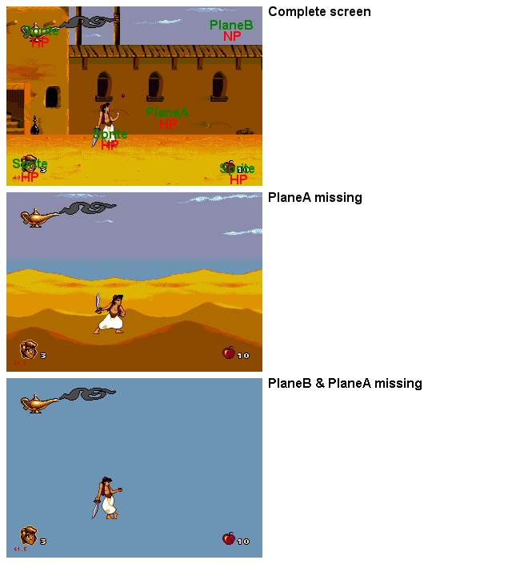

Pic 0 - Planes?Sprites?
As you can see, Aladdin use some very basic VDP techniques. PlaneA is foreground (with buildings), PlaneB is background (with scrolling clouds & dunes), and Sprites are over all.
The PlaneB seems to scroll infinite and the PlaneA is reloaded when scrolling (since the levels are larger than 64*32 tiles).
Just to inform : Shadow/Highlight mode is disactivated and plane size are 64*32 tiles.
